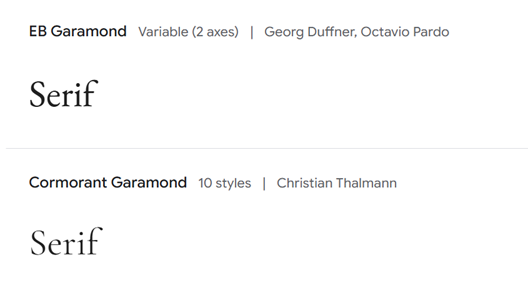
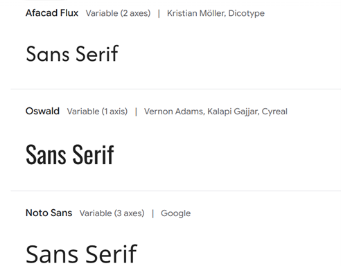
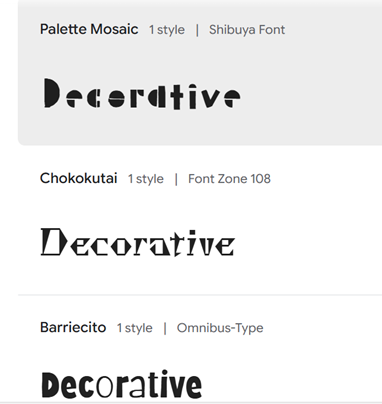
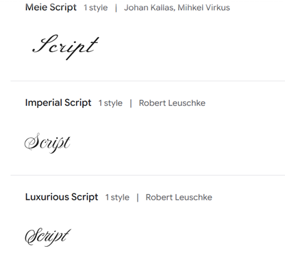
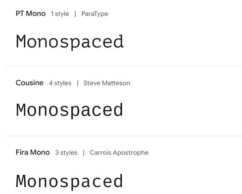

Font Types
Did you know that fonts can affect how you process certain information? This article explores the different types of fonts and where you can find them.
Serif
Serif is the most classic style of font and is found in print. They are ideal for lengthy readings because their feet guides the user throughout the readings. One example of a serif font is Garamond, which can be found in Microsoft Word and on Google Fonts Garamond.
Sans Serif
Sans Serif style fonts are recognized for their clean appeal and are used in the digital world because they are easy on the eyes. An example of this font is, Arial which can be accessed through Microsoft Word and on Google Fonts Sans Serif.
Decorative
Decorative fonts are often associated with brand logos and marketing. These fonts are fun and are meant to be attention grabbing. We see decorative fonts to appeal to children toys, clothes, cartoons etc. Below are some examples of decorative style fonts and can be found on Google Fonts Decorative.
Script
Script fonts, think cursive, beautiful handwriting that add a flow and touch of elegance. These fonts add a personal touch to any message and can be found on Microsoft Word, for example Lucida Handwriting and in Google Fonts Script.
Monospaced
Monospaced font is a style that is popular in today's world due to aesthetics. This font can be defined by the spaced out letters. Below are some examples of monospaced style fonts and can be found on Google Fonts Monospaced.
